巧克力梅干面包奶油布丁巧克力梅干面包奶油布丁
巧克力梅干面包奶油布丁巧克力梅干面包奶油布丁配料
250克陈面包
350克切碎的梅子干
100克黑巧克力
2个鸡蛋
白砂糖及黑砂糖共75克
50克融化的黄油
300毫升牛奶
方法
1. 面包掰成小块。如果有面包皮，请将面包皮切掉放入食品料理机中做成面包糠。
2. 搅拌蛋和糖。
3. 将黑巧克力放入牛奶里轻轻搅拌至融化，然后将混合液倒入蛋液中。
4. 将步骤3中的液体倒在大碗中的面包块和梅干碎上面，浸泡几小时。
5. 倒入融化的黄油。
6. 将烤箱温度设置为180°C，在8英寸蛋糕模具上垫上烘焙纸，倒入混合物，烤制约45分钟，或直到混合物变成固体，且顶部形成酥皮。
7. 趁热加上巧克力酱或巧克力冰激凌，然后尽快享用。
上面这个巧克力梅干面包奶油布丁的食谱是我在某年做了圣诞节布丁之后发明出来的。我当时有一些陈面包（我通常不直接吃面包，而且由于我把面包边都切掉了，所以它们变得又干又硬）和梅子干（同样，一旦打开过包装，它们很快就变得像石头一样硬了），当然，还有很多巧克力，这是我家的常备品。
我们节俭的祖先用剩菜发明了很多食谱。农舍派和牧羊人派是为了把周日午餐聚会剩下的烤肉消灭掉而发明的，面包奶油布丁和法式吐司［或者按照法国人的叫法是pain perdu，按字面意思就是“丢掉的（或浪费掉的）面包”］是为了消灭陈面包而发明的用牛奶和鸡蛋软化它的食谱。中国人也有一个类似的发明，即蛋炒饭，具体而言就是用蛋液翻炒前一天剩下的米饭使其软化。过熟的香蕉可以做成美味的香蕉蛋糕。此外，每个人都有他们自己的消灭圣诞节后大量剩余的火鸡肉的方法——火鸡咖喱？火鸡派？我本人最喜欢的是我妈妈做的花生酱火鸡意面沙拉。
在所有这些例子里，如果你刻意地寻找食材来做本该用剩余食物做的菜的话，你就本末倒置了。其实对于普通的食谱也一样，就像我们在第一章提到的：你可以选择一个食谱，然后根据食谱去购买所需的原材料，或者，你也可以在逛超市的时候买一些自己感兴趣的食材，看看你能发明出什么新菜品。
我认为，这些例子阐释了内在动机和外在动机的区别。如果你先选定了一个菜谱，那么按照它来买菜做饭就是一个出于外在动机的行动；如果你决定使用已有的原材料做饭，那么这就是一个出于内在动机的行动。还有一些时候，你已经有了一个大致的计划，但你决定边做边创造，看看自己最终究竟会做出什么。如果你做出了你本来计划做的东西，那么你的内在动机和外在动机就完美统一了。另一些时候，你做出来的东西和你的预期完全不同，但可能同样很棒。或者，你可能本来并没有什么具体的预期，但最终的成品一样很好（就像我第一次在无意中做出了无麸质巧克力能量棒一样）。对于最后一种情况，我们可以称为“幸运的意外”。这种情况与内在动机和外在动机的统一不一样。
有趣的是，在厨房里，我更多地受到外在动机的驱使。而在数学里，我主要受内在动机的驱使。
这里有一个关于数学中的内在动机和外在动机的小例子。如果我给你如下数字：
25、50、75、100、3、6
你可以通过加减乘除随意组合它们，看看能得到什么数字。这就相当于一种内在动机：你从一些给定的配料着手，看看你能用它们做出什么东西。
或者，你被要求通过各种方法使这些数字得到一个既定的数字，比如952。数学家詹姆士·马丁在几年前的一期智力问答节目里就做到了这件事（令人惊叹！）：
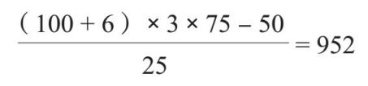
这就是一种外在动机，你可以随便使用什么方法，只要你能达到某个特定的目标。
看地图走与跟着感觉走
当你参观一个新的城市时，你是会去寻找你听说过的那些旅游景点，还是随便以城市某处作为起始地，跟着感觉走？人们常说，关于假日，他们最喜欢的部分就是漫无目的地游荡，然后发现了某条小路尽头的某处鲜为人知的美景。比如，在去埃菲尔铁塔或帝国大厦等标志建筑的路上，你很可能会邂逅一间非常迷人的小咖啡馆。
数学也是如此。很多时候，数学都是在试图回答一个特定的疑问或者解决一个特定的问题。也就是说，你有一个确定要去的目的地。这就是外在动机。数学史上的很多伟大问题都属于这一类：对于一个需要解答的问题，没有人在乎它到底是怎么被解答的，大家只需要知道它被解答了就好。
学校数学课的问题之一就是几乎所有的学习都是由外在动机驱动的。你总是在试图解决一个特定的问题，而更糟糕的是，这是一个别人给你出的问题，一个你除了完成数学作业和应付考试外很可能根本没有必要去解决的问题。
比如解一元二次方程。也许你还记得学校里学的，或者我们在第二章讨论过的方程：
ax2+bx2+c=0
它的解有一个可直接套用的公式：
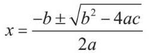
这个公式就是为了解这个方程而创造的。它完全不是数学家出于兴趣发明出来，然后说“看看我能用它来做什么”那样的事物。
与上数学课相对，在数学研究中，情况通常是相反的：你会给自己一个起点，然后看看自己能走到哪里去。我称此为“内在动机”。它没有解决伟大问题那么激动人心，所以人们对它的关注相对较少。就像你在小路尽头发现的鲜为人知的美景，就景色本身而言，它远不如埃菲尔铁塔，也很可能并不会被旅游攻略提及。但使巴黎成为巴黎的原因是什么呢？是埃菲尔铁塔，还是那些并不为人所知的美景？显然，两者都是必要的，而且更重要的是它们组合在一起的方式。
这方面最有名的数学实例之一就是，几百年来，人们都认为研究质数没有什么实际应用方面的价值。然而，数学家依然痴迷于研究它们，因为它们本身就很迷人，而且它们是如此的简单、基础。他们在研究质数的时候怎么会知道，费马在1640年提出并被欧拉在1736年证明的一个定理日后会成为互联网加密技术的基础呢？即便是电脑的发明也是定理证明几百年后的事了。而且，没错，此费马正是提出著名的“费马大定理”的费马，这个定理又被称作“费马小定理”，以便与“费马大定理”做区分。
其实，费马大定理本身就是一个内在动机与外在动机相互作用的有趣实例。首先，这个例子表明，在你尝试解决既定问题的过程中，你很有可能会有新的发现。在试图证明费马大定理的过程中，安德鲁·怀尔斯发现了许多关于椭圆曲线的重要特性，而椭圆曲线听起来和费马大定理似乎没有任何关系。你应该还记得，费马大定理说的是就方程an+bn=cn而言，如果n是一个大于2的正整数，则不存在非负整数a、b和c使该方程成立。
但内在动机和外在动机在这个例子里还表现出了另一种相互作用的方式，一种我觉得十分美好、令人愉悦的方式。这就好比你将起始点设定在城市中心，打算去巴黎圣母院看看，但你决定，与其参照地图直奔巴黎圣母院，不如听凭自己的直觉和喜好走上蜿蜒小道，边浏览边前行。然后，瞧，你发现自己走到了巴黎圣母院的门口。在费马大定理这个例子里，数学家也曾因为各自的研究目的对椭圆曲线进行了深入探索，而其结果在某种程度上反过来推动了费马大定理的最终证明。
当做数学研究完全出于外在动机的时候，你的感觉就可能类似于下定决心前往巴黎圣母院，结果不得不在一条风景糟糕的大马路上走很久。可以说，这是一种过于功利主义或者实用主义的数学。当做数学研究完全出于内在动机的时候，你的感觉可能类似于在一条美丽的小径上游荡许久却始终没有看到任何值得一提的风景。这是一种过于理想主义或者过于唯美的数学。而当两者合一的时候，你就会找到一条既有趣，又指向有意义的终点的道路——这是两种动机的有效结合，也是数学最美妙的部分。
数学的不同领域有不同的研究重点。数论领域里有很多知名的未解之谜，为解决这些谜题，数学家们一直在努力运用他们能想到的各种办法。范畴论则稍有不同。这个数学分支的目的之一就是找到每项数学研究、每个数学概念的内在动机，或是找到一种看待事物的新观点，启发已经存在但未被发现的内在研究动机。在本书的第二部分，我们会看到范畴论是如何用不同的方式达到这个目的的。举个例子，我们可以列出30的所有因数，也即所有能整除30的非负整数。它们是：
1、2、3、5、6、10、15、30
然而，把它们都列出来好像并不能给我们什么启发。因为其实这些因数中的一些也是彼此的因数。如果用线把彼此有因数关系的数字都连起来，我们就会得到这样一幅图：
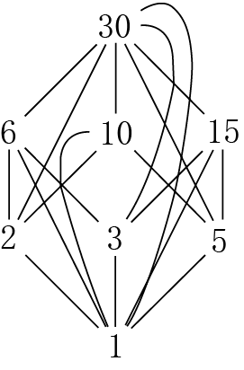
这张图看起来有些混乱。对此，我们可以通过只连接中间没有其他因数的数字的方式来简化这幅图。即，我们可以把6和30连起来，但不能把2和30连起来，因为6在它们中间。如此，我们就得到了下面这幅看起来简洁许多的图：
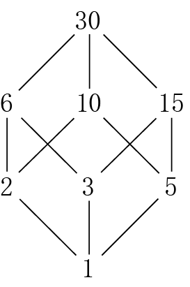
我们稍后会进一步探讨这类图示，我们会发现，这就是范畴论让事物变得更有条理，以几何图示的方式表示抽象概念的方式。
创造和发现
有时我会想，从前与现在的科学探索会有多大的不同，因为从前还有许多未被探索过的区域以及有待发现的大型动物——至少对于欧洲人是这样。我猜现在仍然有未被发现的昆虫、细菌和植物，但想想第一批看到鸭嘴兽的欧洲人吧，他们感受到的震撼实在难以想象。没有人相信他们——当他们在1798年将鸭嘴兽的标本和画像带回大不列颠的时候，人们怀疑这完全是一个骗局，是某个高超的标本剥制师将鸭嘴缝到了某种其他的哺乳动物身上。
人们也曾经怀疑过某些数学结论是一场骗局。人们总对我说，“数学总是非此即彼。2+2就等于4”。但我现在想告诉你，并非如此，有时候2+2=1也能成立。
你是不是觉得我在开玩笑？不，并不是。在某个数字世界中，事实就是如此。就像一个一圈只有3个小时而不是12个小时的钟。我们已经习惯于这样的事实：如果现在是11点，那么2小时后就是1点。换句话说：
11+2=1
而如果我们用一个一圈只有3个小时的钟（如下图所示）计时的话，
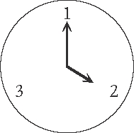
那么2点钟的2小时后就是1点钟。换句话说：
2+2=1
这个例子可能多少显得有些不自然，就好像是我故意为了证明2+2不等于4而编出来的。换句话说，是外在动机驱使我举了这个例子。但稍后我们会看到，这个“只有3个小时的钟”的数字体系的最初建立其实是由内在动机驱使的，是一件自然而然的事，它是一个很重要的数学概念。
这里有一个由内在动机驱使产生的奇怪的数学问题。也许你还记得y=sinx的函数图看起来是这样的：
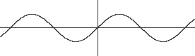
而y=1/x的函数图是这样的：
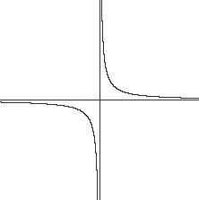
现在，我们武断地决定把这两者结合起来，然后来看看y=sin（1/x）的函数图像是什么样子的。这个函数图像很不规则：
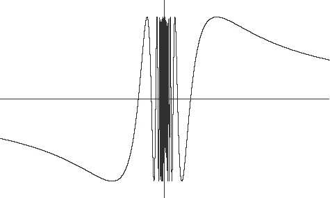
有时候，数学家会刻意寻找这种不规则的函数图像，就像寻找尼斯湖水怪一样。通常的情况是，他们想要找到某种特定的不规则的函数或空间或其他什么东西，所以他们就刻意地制造出一个这样的东西。
这里有一个出于外在动机被刻意“制造”出来的函数：如果x是有理数，那么f（x）=1，如果x是无理数，那么f（x）=0。这个函数图像几乎是不可能画出来的，因为函数值会一直在0和1之间跳来跳去。
一个关于被故意发明出来的空间（而且让所有人都很困惑）的例子是“夏威夷环”（Hawaiian earring）。你可以先画一个半径为1的圆，然后在它内部靠边的地方画一个半径为1/2的圆：
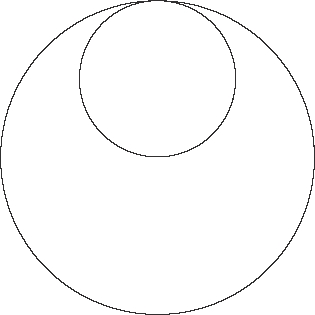
然后你再在两个圆的切点处画一个半径为1/3的圆，之后再画一个半径为1/4的圆，再之后是半径为1/5的圆，以此类推，就这样一直画下去直到“永远”：
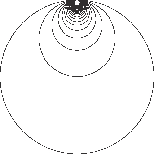
注意，这是数学，所以你不需要真的坐在那里永恒地画下去——你只需要想象你这么做就行了。总之，夏威夷环有一些非常奇特和不规则的特性，而这些特性会令拓扑学家感到非常激动。
直接拼拼图与先看完成图
你在玩拼图的时候，是先看盒子上的完成图，然后再对照着将拼图碎片放在合适的位置上，还是不看完成图，直接通过观察拼图碎片之间的关系把它们组合起来？
根据完全图来拼拼图就像数学里由外在动机驱动的研究。你有一个清晰的目标，你知道目标具体是什么，你努力达到这个目标。而不看完成图直接拼拼图则像数学里由内在动机驱动的研究。你试着根据拼图碎片自身的结构及其与其他碎片的关系来组合它们，而不是根据它们与一个外在的完成图的关系来摆放它们。
我发现，小孩子们在玩拼图时总是会下意识地选择听从内在动机而非外在动机。他们似乎更倾向于把有些许类似的拼图碎片拼到一起，而不是比较碎片和盒子上的完成图。事实上，我觉得说服小孩子们根据完成图拼拼图是很难的。我猜原因可能在于，在儿童成长的不同阶段，内在动机和外在动机在他们身上的作用力不同。此外，他们还对字面意义上的“内在”而非“外在”更感兴趣：他们一般都会从拼图的中间开始拼起，因为那是最有趣的部分。大部分的成年人从他们成长过程中的某个时点开始，就明白了有效、合理的拼拼图方法是从四个角开始拼（如果完成图是长方形的话），然后把所有的边都拼好。而孩子，至少我认识的那些孩子都不愿意这样做。
中学时，在我上物理高级水平课程的时候，老师通常会在测试前发给我们一张写满各种公式的纸，这让考试看起来更像一个拼图任务，而不是一次对于物理知识的测验。这张纸包含所有我们会用到但不需要记住的物理公式，比如：
两个点电荷之间的相互作用力：
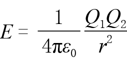
对电荷的作用力：F=EQ
均匀电场的强度：E=V/d
径向电场的强度：E=
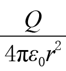
现在，我要向大家承认，其实我从来没有关心过这张纸上的公式到底是什么意思。事实上，我当时挺为自己找到能够在物理高级水平课程的测验上得高分而并不需要理解那些物理知识本身的方法而骄傲的。我所做的只是阅读问题，写下所有与题目中的量有关的字母符号，然后扫一眼公式纸，找出包含上述这些字母符号的公式。这就像一个追求效率的成年人以“外部驱动”的方式而非“内部驱动”的方式拼拼图一样。当时的我认为我找到了最有效的、以最小工作量拿到物理高级水平课程好成绩的方法。
我们会在后文看到，范畴论常常是连接内部过程和外部过程的桥梁。它将内部过程变得更加几何化，因此有时候解决这类问题就像是在拼拼图一样。
下面是一个范畴论里的拼图问题。你甚至可以在不明白这些碎片本身的意思的情况下将它们拼成完整的图片。比如，我们有这样两个碎片：
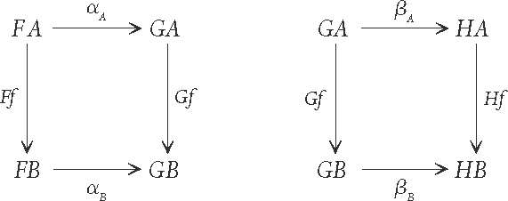
我们想把它们拼成下面这样的图：
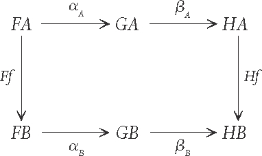
我们可以直接把前面两个碎片的边沿着边组合在一起，就像这样：
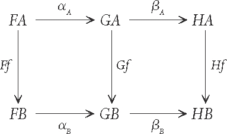
这是范畴论里一个很典型的运算。完成图会越来越大，我们也会用到越来越多的碎片。但是，因为这些碎片是抽象的，所以我们就有无限个碎片可以用，而且每个都可以用无限多次。
假如你感兴趣的话，上面这个例子是“让自然变换做分量运算可以得出另一个自然变换”的部分证明。更概括地说，范畴论里的这种拼图问题也被称作“交换图表”，这是一个我觉得非常有趣的数学领域。
锻炼身体和为比赛而训练
如果你为了保持身体健康而进行体育锻炼，那么你会选择一个特别的项目进行专门的训练吗？有些人会这么做，他们会选择投身于某个特别的项目，比如马拉松、三项全能或户外探险，这些项目会让他们充满动力。而另外一些人则可能为了保持身体健康、休闲娱乐或释放压力而运动。当然，很有可能这几种原因都有——如果你不享受运动的话，那么将完成一次马拉松作为目标并不会对你的训练有帮助。
当我准备参加纽约市马拉松比赛的时候，我的锻炼计划发生了很大的变化。我读了很多篇文章，这些文章都说跑半程马拉松并不需要特别的训练，但跑全程马拉松就必须进行专门训练了。事实上，我确实是在没经过特殊训练的情况下就去跑了伦敦半程马拉松，我所做的准备只是每隔一天去健身房进行日常的身体锻炼而已。此外，我还有一个很爱运动的朋友，他没经过专门训练就去跑了纽约马拉松，结果膝盖受伤了。
所以我增加了锻炼的时间，训练耐力，根据我在网上找到的一个方法每两周跑一次长跑，并在最后的几周减少长跑量，将距离最长的一次长跑训练放在马拉松比赛之前的一个月左右。这个计划实现得不错，而且我最终在自己预计的时间内跑完了全程。（当然，我的预计时间设定得很宽松，但我对自己的期待很切实际。）
我想说的是，大概有6个月的时间，我的锻炼计划几乎完全听从于外在动机——我有一个确定的目标，我所做的每件事都是为了实现那个目标。然而，在那6个月的之前和之后，我的锻炼计划都是由内在动机驱动的，我并没有一个特定的目标（“保持整体健康和减肥”不能算是一个特定的目标）。重要的是锻炼本身，以及享受这个锻炼的过程。
人们常常宣传学数学的外在动机——很好找工作，可以解决实际生活中的问题。但就像马拉松一样，如果你不是本身就喜欢数学的话，那么硬要跟你说数学能如何解决实际问题也没用。举个最近发生在我朋友身上的例子——她想辅导她儿子的功课，但她觉得自己更需要辅导。
乔治上周开车共行驶了764英里，用掉了15加仑
的汽油。如果汽车在高速路上行驶时每54英里耗油1加仑，在市区里行驶每31英里耗油1加仑，那么乔治上周在市区开了多少英里？
这个问题让人遗憾的地方在于，它想要给人设置一个解答问题的外在动机，但整个问题场景实在做作。你为什么需要知道乔治上周在市区里开了多少英里呢？除非你是他的妻子，想知道他有没有外遇。如果不是这样的话，记住你在高速路上开了多少英里，然后用764减去这个数字不是更简单吗？
就这个问题而言，其在数学上的内在动机对我来说要有趣得多。这个问题包含两个未知量：在市区里汽车行驶的英里数，在高速路上汽车行驶的英里数。它也包含两条与之相关的信息：总的英里数和总的耗油量。这是一个碎片数量合适的拼图问题。
解决这个问题的第一步是抽象化——把由文字描述的问题转变为由字母、数字、方程等组成的数学表达。如果我们用M代表汽车在高速路上行驶的英里数，用T代表汽车在市区行驶的英里数，我们就可以把这两条已知信息写成方程了。
• 总的英里数是764，也就是说：
M+T=764
• 在高速路上每54英里耗油1加仑，那么在高速路上行驶所耗油量就是M/54。
• 在市区里每31英里耗油1加仑，那么在市区里行驶所耗油量就是T/31。
• 总的耗油量是15，即在高速路上行驶和在市区里行驶的耗油量相加应该等于15，也就是说：
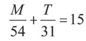
现在，我们有两个未知数以及两个包含未知数的方程。凭第一感觉，你可能会意识到，如果我们有200个未知数，而只有一个方程，我们可能就没有足够的信息算出这些未知数的值都是多少了。但总的来讲，如果方程的数量和未知数的数量一样，我们就很有希望将方程解出来。
我个人认为，解方程是整个解题过程最无趣的部分，但这是因为我特别喜欢抽象的过程，喜欢它胜过计算。不知道你是否注意到了，这个问题在本书的前面也出现过。当我们把关于乔治的问题变成两个一次方程时，它就变成了我们在第二章看到过的一组方程，而那组方程是关于儿子和爸爸的年龄的。现在，我们已经把乔治的问题抽象成了一个我们已经解决过的问题，所以我们不需要再进行计算了。
不过，我还是会将计算过程写出来。
从第二个方程入手：等式两边同时乘以54和31，去掉分数，得到：
31M+54T=15×54×31
=25110
现在将第一个方程的等式两边同时减去T，得到：
M=764–T
把上述等式带入前面的等式，得到：
31（764 - T）+ 54T=25110
23684–31T+54T=25110 …… 乘法分配律
23684+23T=25110 …… 合并含有T的项
23T=25110 - 23684
=1426
T=1426/23
=62
所以答案是乔治在市区里开了62英里。好极了。也许他真的有外遇？
这一整章里，我一直在讨论两种数学创新的方法。一种是由内在动机驱动的，即跟着直觉和想象力走，发明一些你感觉有趣或合理的东西。另一种是由外在动机驱动的，即为解决一个特定的问题而寻找、开发解决办法。
我们现在要比较一下这两种方法在发现“虚数”这个概念上起到的不同作用。
你也许还记得“负数不能取平方根”这个重要原则。其原因在于，正数乘以正数还是正数，负数乘以负数也是正数。所以一个数乘以它自己总是正数（或者0）。也就是说，任何一个数的平方都不可能为负。而取平方根是平方的逆运算。所以，要找到一个负数的平方根，我们就需要找到一个平方为负的数——而我们刚刚才说，这样的数不存在。
这时候，内在动机会让我们对这件事感到不满意、沮丧、恼火，甚至为不能对负数取平方根而生气。想象一下，你看到一个标志，它告诉你你不能做一件你觉得完全无害的事——你是不是会马上就想去做那件事？我们现在遇到的就是这种情况，有一个标志告诉你，你不能对负数取平方根，但这件事究竟有什么害处呢？在数学里，“害处”指的是“造成逻辑矛盾”。如果一件事没有造成逻辑矛盾，你就可以做这件事。
因此，对一个负数取平方根唯一可能的“害处”就是你试图声称一个数的平方可以为正数也可以为负数，因为我们知道这是不可能的。
那么，我们怎样才能让一个负数，比如-1，成为一个数的平方呢？也许，数学中的确存在这样一个完全不同的数字体系，其中的数字乘以它本身会得到一个负数。你也许会马上反驳说，但这是不存在的——就像鸭嘴兽一样？
关键就在于，在数学里，一旦你想象出一个东西，只要它本身不存在逻辑矛盾，那么它就存在了。给-1取平方根并不会造成矛盾，只要它的平方根是一个新的数字，而不是我们已经知道的任何正数或者负数即可。它就像一种全新的乐高积木。为了保证我们不把这类数字和我们已知的数字搞混，我们给它起了一个全新的名字：i。i指代“虚构的”（imaginary）一词，因为它是一种新的数字类型，而且不是“真正存在”的数字。我们在后文会进一步讨论这个问题。
一种更加“外在的”发明虚数的方法是试着解二次方程。二次方程就是一个有x和x2的方程，比如：
x2+x -2=0
或者
2x2–7x+3=0
你也许还记得怎么解这种方程，也就是找出所有使等式成立的x的值。如果你已经不记得了的话，我可以告诉你，x=1或者 x=-2都可以使第一个方程成立，x=3或者 x =1/2都可以使第二个方程成立。任何其他的数字都不能使这两个方程成立。
那么下面这个方程呢？
x2+x+1=0
不管你尝试什么数字，正数、负数还是0，你都会失败——方程的左边永远不可能等于0。这时，你当然可以耸耸肩说，反正你也不想知道怎么解二次方程。但数学家不喜欢解不出来的问题。而发明“虚数”就是一种给此类之前无解的方程找到解的方法。此时，受内在动机驱动的结果和受外在动机驱动的结果就十分接近了。
你是否会认为，为了解决一个问题而发明一个新的概念然后宣称这就是答案相当于作弊？对我来说，这反而正是数学最激动人心的一个方面。只要你发明的新概念不会造成矛盾，你就有权发明它。关键在于平衡这个过程中的内在动机和外在动机。如果你发明一个概念纯粹是为了解决某个特定的问题，那么长远来看，它就不大可能是一个好的数学概念，即使它的存在本身可能并没有错。最好的数学发明是那些既合理又能解决很多业已存在的问题的发明。
1加仑（英）≈ 4.5461升。——编者注
此处可能存在两种例外情况：两个方程相互矛盾，或者两个方程本质上是一样的。在此我们就不探讨这两种例外情况了。